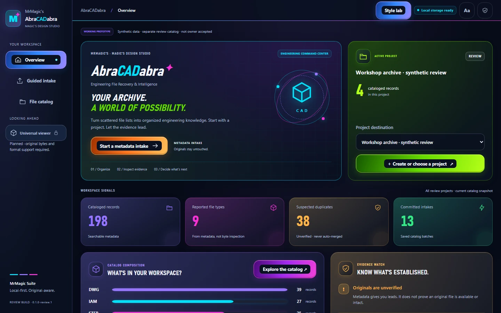
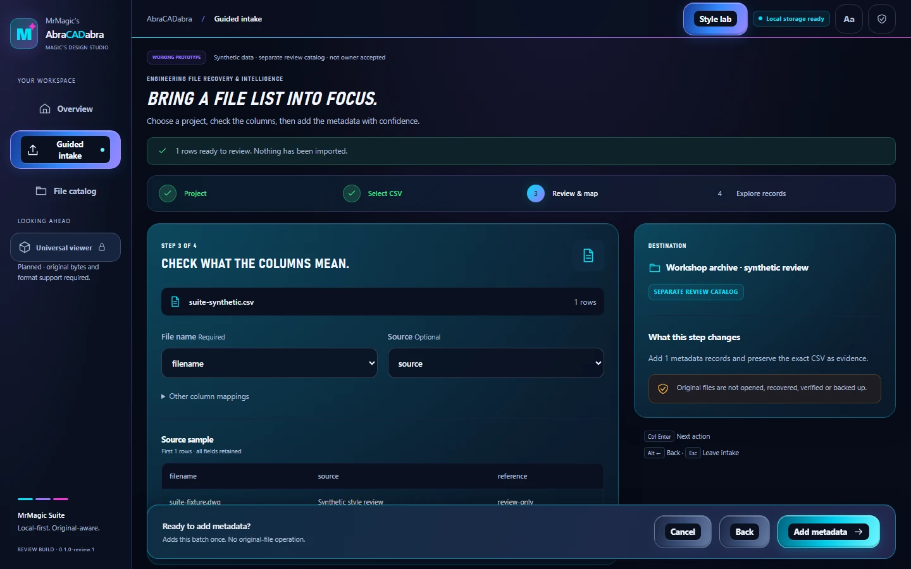
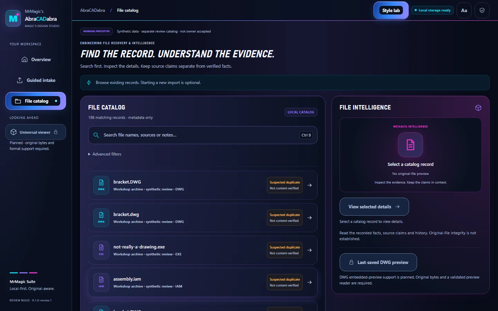

Select a project
Choose the project that will hold the records.
ENGINEERING SOFTWARE · PERSONAL PROJECT
AbraCADabra · Engineering Recovery Vault
Organize engineering file information, find records quickly and see where each record came from.
Working with fictional test records: importing file information, matching columns, searching the catalog and inspecting records. Recovering original files, converting them and viewing CAD drawings are still ahead.

Captured in a browser on November 5 using fictional records. A later Windows test version uses the same interface; its desktop window is not shown here.
A PRACTICAL ENGINEERING WORKFLOW
Choose the project that will hold the records.
Check the columns and tell the app what each one means.
Save the records and their origins while leaving original engineering files untouched.
Search and filter records, check their origins and see what still needs checking.
ACTUAL APPLICATION / FICTIONAL TEST RECORDS


WORKING FEATURES / NEXT TESTS
AbraCADabra feature status
Tested with fictional records: choosing projects, matching spreadsheet columns, saving complete imports, searching and viewing record details.
Records retain their source and import history. Possible duplicates are flagged for review; the app does not assume the original files match or merge them automatically.
The Windows package passed 27 component checks, 17 workflow checks and 17 startup/shutdown checks. Hands-on desktop testing is incomplete, and operation on a clean second PC has not been established.
Still planned. Despite the project name, the app cannot yet recover, convert or display original engineering files.
A Windows test package exists. Hands-on checks, a clean-PC test and installation testing are still needed before calling it ready for everyday use.
HOW IT WORKS
Guided steps, readable progress and record details.
The Windows test version uses WebView2 to connect its interface to a limited set of desktop functions.
Check file-information changes and save complete operations together.
Keep records and their history in the selected local storage.
The Windows test version does not run a web server. Its catalog is separate from the original engineering files. Browser screenshots and desktop startup/shutdown tests show different parts of the work.